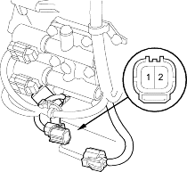
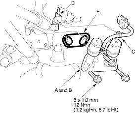

- Disconnect the shift solenoid valves A and B connector.

- Measure shift solenoid valve A resistance between the No. 1 terminal of the shift solenoid valves A and B connector and body ground and measure shift solenoid valve B resistance between the No. 2 terminal and body ground.
STANDARD: 12-25 ohm;
- Replace the shift solenoid valves A and B if either resistance is out of standard.
- If the resistance is within the standard, connect the No. 1 terminal of the shift solenoid valve A to the battery positive terminal. A clicking sound should be heard. Connect the No. 2 terminal to the battery positive terminal. A clicking sound should be heard. Replace the shift solenoid valves A and B if no clicking sound is heard when either terminal is connected to the battery terminal.
- Remove the harness clamp (C) form the clamp bracket (D).
- Remove the mounting bolts and the shift solenoid valves A and B.

- Clean the mounting surface and fluid passage.
- Install new shift solenoid valves A and B with a new filter/gasket (E) and install the harness clamp on the clamp bracket.
- Check the connector for rust, dirt, or oil, then reconnect the connector securely.